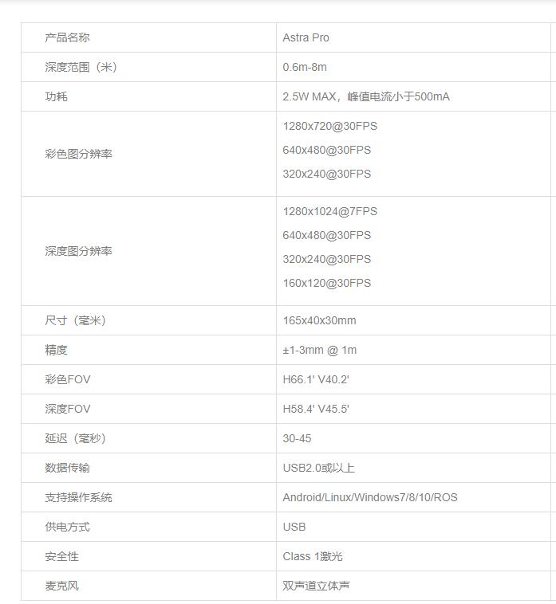

Astra相机驱动&SDK¶
Astra（orbbec奥比中光）乐视相机相关驱动，本教程针对Windows和Ubuntu14.04=Ubuntu18.04系统版本
官网链接：https://orbbec3d.com/develop/
该深度相机是乐视与奥比中光合作的体感相机，对标微软Kinect,可用于三维重建，SLAM学习，也可以作为免驱UVC摄像头体感摄像头使用
相机参数：

Linux环境¶
依赖环境¶
sudo apt-get install build-essential freeglut3 freeglut3-dev
sudo apt-get install libsfml-dev
相机SDK&Samples¶
- 执行环境安装
tar -zxvf AstraSDK-v2.0.18-05cfa52534-20191108T074013Z-ubuntu1604.tar.gz
cd AstraSDK-v2.0.18-05cfa52534-20191108T074013Z-Linux/install
sudo sh ./install.sh
输出结果包含以下两行，注意把倒数第二个路径里的install删掉：
export ASTRA_SDK_INCLUDE=/home/ty/Lesson/GrabObject/astra/AstraSDK-v2.0.18-05cfa52534-20191108T074013Z-Linux/install/include export ASTRA_SDK_LIB=/home/ty/Lesson/GrabObject/astra/AstraSDK-v2.0.18-05cfa52534-20191108T074013Z-Linux/install/lib
删掉install之后：
export ASTRA_SDK_INCLUDE=/home/ty/Lesson/GrabObject/astra/AstraSDK-v2.0.18-05cfa52534-20191108T074013Z-Linux/include export ASTRA_SDK_LIB=/home/ty/Lesson/GrabObject/astra/AstraSDK-v2.0.18-05cfa52534-20191108T074013Z-Linux/lib
- 将输出结果复制到
~/.bashrc尾部
gedit ~/.bashrc
- 使之生效
source ~/.bashrc
Samples目录中即是示例程序，需要依赖include和lib目录
OpenNI相机测试工具¶
- 安装OpenNI
unzip OpenNI_2.3.0.55.zip
cd OpenNI_2.3.0.55/Linux/OpenNI-Linux-x64-2.3.0.55
chmod +x install.sh
sudo ./install.sh
- 重新拔插设备
- 初始化OpenNI环境
source OpenNIDevEnvironment
- 编译运行
cd Samples/SimpleViewer
make
cd Bin/x64-Release
./SimpleViewer
Windows环境¶
方式一：¶
安装驱动，运行OpenNI测试Demo
-
相机驱动：
http://dl.orbbec3d.com/dist/drivers/win32/astra-win32-driver-4.3.0.10.exe
-
OpenNI：
http://dl.orbbec3d.com/dist/openni2/OpenNI_2.3.0.63.zip
首先双击安装相机驱动，astra-win32-driver-4.3.0.10.exe，然后解压OpenNI开发包，将相机插上USB口（建议使用USB3.0的插口），双击打开打开Astra OpenNI2 Development Instruction(x64)_V1.3\Tools\OBNiViewer目录下的OBNiViewer应用程序即可
方式二：¶
在VS下运行Demo
-
Orbbec Astra SDK：
http://dl.orbbec3d.com/dist/astra/v2.0.18/AstraSDK-v2.0.18-05cfa52534-20191108T075451Z-vs2015-win64.zip
-
使用Windows的AstraSDK需要安装微软的Visual Studio
https://www.microsoft.com/en-us/download/details.aspx?id=48145
将AstraSDK-v2.0.18-05cfa52534-20191108T075451Z-vs2015-win64.zip解压后，从VS打开OrbbecStreamSample示例程序，运行main.cpp即可